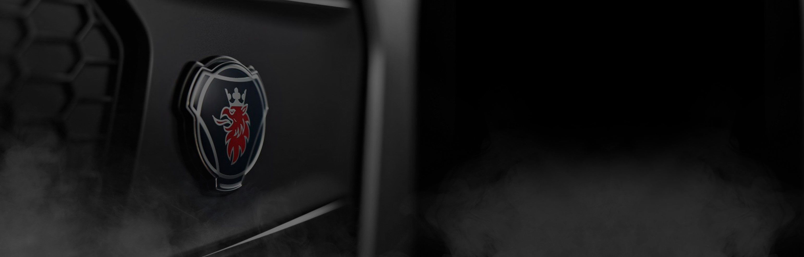

<div class='mainContent'>
    <div id="welcomePage">
        <div class="banner">
            
        </div>
        <div class='infoSection'>
            <div class='infoGroup'>
                <h2>PROSSESS Maintenance group </h2>
                <ul>
                    <li> Maritha Kvist, Maintenance manager - INBG </li>
                    <li> Richard Andersson, System Owner - TEIE </li>
                    <li> Peter Kors, Expert User - MZEPC </li>
                    <li> Kristina Blomqvist, Expert User - MSQA  </li>
                    <li> Pascal Caillé, Expert User - MAQE </li>
                    <li> Jean-marc Piraud, Expert User - MALP </li>
                    <li> Roel Mulder, Expert User - MZLPD </li>
                    <li> Sanny Hallberg, Expert User - MSMDA </li>
                </ul>
            </div>
            <div class='infoGroup'>
                <h2>Service Desk/Customer Support</h2>
                <ul>
                    <li> Phone:+46 8 553 81795 </li>
                    <li> Mail: cs.sodertalje@scania.com </li>
                    <li><a href="https://internal.scania.com/" target = "_blank">Interferences (Scania Inline)</a> </li>
                    <li><b>Super-user first</b></li>
                    <li> Coordinate any issues or requests with your super-user first </li>
                    
                </ul>
            </div>

            <div class='infoGroup'>
                <h2>DEVELOPMENT</h2>
                <ul>
                    <li> Follow up PROSSESS project in <a href="https://jira.scania.com/" target = "_blank">Jira.scania.com</a> for updates on current change requests. </li>

                </ul>
            </div>

        </div>
    </div>